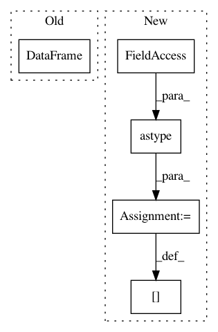

644f6485707aaf7d670216f7ea0885b7a0bc8a26,lore/encoders.py,Token,transform,#Token#Any#,523
Before Change
with timer("transform token %s:" % self.name, logging.DEBUG):
tokens = self.tokenize(data)
for column in tokens:
tokens[column] = super(Token, self).transform(pandas.DataFrame({self.column: tokens[column]}, copy=False))
return pandas.Series(tokens.values.tolist())
def reverse_transform(self, series):
After Change
result = values.map(self.map, na_action="ignore")
result[result == 0] = self.tail_value
result[result.isnull()] = self.missing_value
results[column] = result.astype(self.dtype)
return pandas.Series(pandas.DataFrame(results).values.tolist())
def reverse_transform(self, series):
with timer("reverse_transform token %s:" % self.name, logging.DEBUG):
In pattern: SUPERPATTERN
Frequency: 3
Non-data size: 5
Instances
Project Name: instacart/lore
Commit Name: 644f6485707aaf7d670216f7ea0885b7a0bc8a26
Time: 2017-12-08
Author: montanalow@users.noreply.github.com
File Name: lore/encoders.py
Class Name: Token
Method Name: transform
Project Name: gboeing/osmnx
Commit Name: 4e2a294ef733417631dbb90f586127a24a043a30
Time: 2020-11-19
Author: boeing@usc.edu
File Name: osmnx/utils_graph.py
Class Name:
Method Name: add_edge_lengths
Project Name: gboeing/osmnx
Commit Name: 08884e278540cc3b3cbe780f6695bc8cbb4c05b6
Time: 2020-12-02
Author: boeing@usc.edu
File Name: osmnx/utils_graph.py
Class Name:
Method Name: add_edge_lengths